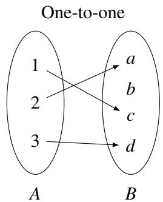
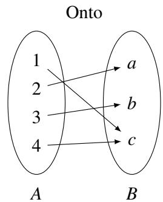
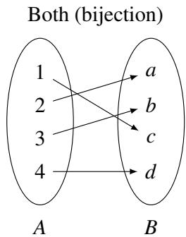
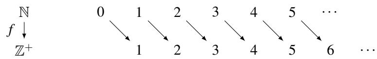
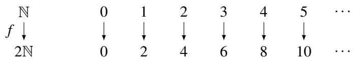
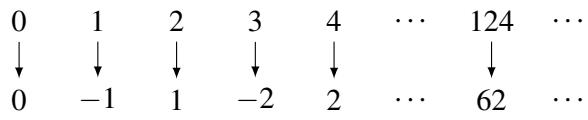
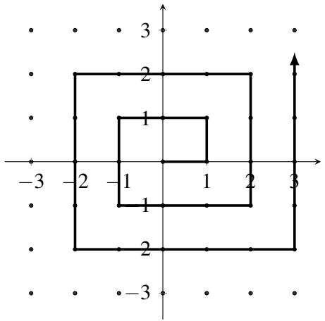
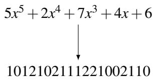
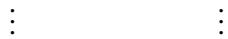
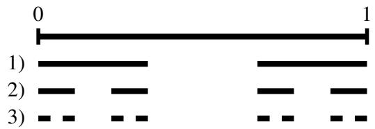

010 - 迈向无穷：可数性与可计算性
接下来的两份讲义将两个乍一看似乎毫无关系的主题联系在一起：无穷的本质（更具体地说，是不同级别的无穷之间的区别），以及计算和证明的根本性质。在第一份讲义中，我们将重点关注无穷的概念，然后在第二份讲义中转向与计算的联系。
1 双射
两个有限集具有相同的大小，当且仅当它们的元素可以配对，使得一个集合中的每个元素在另一个集合中都有唯一的伴侣，反之亦然。我们通过双射的概念将这一思想形式化。
考虑一个函数（或映射）\(f\)，它将集合 \(A\)（称为 \(f\) 的定义域，domain）的元素映射到集合 \(B\)（称为 \(f\) 的值域，range）的元素。由于 \(f\) 是一个函数，它必须为每个元素 \(x \in A\)（“输入”）指定恰好一个元素 \(f(x) \in B\)（“输出”）。回想一下，我们将其记为 \(f: A \to B\)。我们说 \(f\) 是一个双射（bijection），如果每个元素 \(a \in A\) 都有唯一的像 \(b = f(a) \in B\)，且每个元素 \(b \in B\) 都有唯一的原像 \(a \in A : f(a) = b\)。
如果 \(f\) 将不同的输入映射到不同的输出，则 \(f\) 是一个一对一函数（或称为单射，injection）。更准确地说，如果以下条件成立，则 \(f\) 是一对一的：\((\forall x \in A) (\forall y \in A) (x \neq y \implies f(x) \neq f(y))\)。
如果 \(f\) “命中”了值域中的每个元素（即，值域中的每个元素至少有一个原像），则 \(f\) 是满射的（或称为映上的，onto/surjective）。更准确地说，如果以下条件成立，则函数 \(f\) 是满射的：\((\forall y \in B) (\exists x \in A) (f(x) = y)\)。
这里有一些简单的例子来帮助直观地理解单射、满射和双射：



注意，根据上述定义，\(f\) 是双射当且仅当它既是单射又是满射。
练习。令 \(f: A \to B\) 为双射。证明 \(f\) 具有反函数 \(f^{-1}: B \to A\)，满足对于所有 \(a \in A\) 有 \(f^{-1}(f(a)) = a\)，且 \(f^{-1}\) 也是双射。
2 基数
我们如何确定两个集合是否具有相同的基数（cardinality，或称“大小”）？令人安心的是，这个问题的答案就在小学早期的记忆中：通过展示两个集合元素之间的配对。更正式地说，我们需要展示两个集合之间的一个双射 \(f\)。双射建立了两集合元素之间的一一对应或配对关系。我们已经在上面看到了这对于有限集是如何工作的。在本讲义的其余部分，我们将看到它告诉了我们关于无穷集的什么。
关于无穷集的第一个问题是：自然数 \(\mathbb{N}\) 是否比正整数 \(\mathbb{Z}^+\) 更多？人们很容易回答“是”，因为每个正整数也都是自然数，但自然数多了一个元素 \(0 \notin \mathbb{Z}^+\)。然而，通过更仔细地观察，我们发现可以如下定义自然数与正整数之间的双射：

更准确地说，这个映射定义为对于所有 \(n \in \mathbb{N}\)，\(f(n) = n + 1\)。为什么这个映射是双射？显而易见，函数 \(f: \mathbb{N} \to \mathbb{Z}^+\) 是满射，因为每个正整数都被命中了。它也是单射，因为没有两个自然数具有相同的像。（\(n\) 的像是 \(f(n) = n + 1\)，所以如果 \(f(n) = f(m)\)，则必须有 \(n = m\)。）由于我们已经展示了 \(\mathbb{N}\) 与 \(\mathbb{Z}^+\) 之间的双射，这告诉我们，自然数的数量与正整数一样多！（非常）非正式地说，我们已经证明了“\(\infty + 1 = \infty\)”。
那么偶自然数集合 \(2\mathbb{N} = \{0, 2, 4, 6, \dots\}\) 呢？在前一个例子中，区别仅在于一个元素。但在本例中，自然数的数量似乎是偶自然数的两倍。既然 \(\mathbb{N}\) 还包含了所有奇自然数，其基数肯定比 \(2\mathbb{N}\) 大吧？尽管这看起来像是一项更困难的任务，但让我们尝试使用映射 \(f(n) = 2n\)（对于所有 \(n \in \mathbb{N}\)）来寻找这两个集合之间的双射：

本例中的映射也是一个双射。\(f\) 显然是单射，因为不同的自然数映射到不同的偶自然数（由于 \(2n = 2m\) 意味着 \(n = m\)）。\(f\) 也是满射，因为值域中的每个 \(n\) 都被命中了：它的原像为 \(\frac{n}{2}\)。由于我们找到了这两个集合之间的双射，这告诉我们实际上 \(\mathbb{N}\) 和 \(2\mathbb{N}\) 具有相同的基数！
那么所有整数的集合 \(\mathbb{Z}\) 呢？乍一看，由于它包含了无穷多个负数，整数集显然比自然数集大。然而事实证明，可以找到这两个集合之间的双射，这意味着这两个集合的大小相同！考虑以下映射 \(f\)：

换句话说，我们的函数定义如下：
我们将通过证明该函数 \(f: \mathbb{N} \to \mathbb{Z}\) 既是单射又是满射来证明它是双射。
证明（单射）：假设 \(f(x) = f(y)\)。那么它们必须具有相同的符号。因此要么 \(f(x) = \frac{x}{2}\) 且 \(f(y) = \frac{y}{2}\)（当 \(x, y\) 均为偶数时），要么 \(f(x) = -\frac{x+1}{2}\) 且 \(f(y) = -\frac{y+1}{2}\)（当 \(x, y\) 均为奇数时）。在前一种情况下，\(f(x) = f(y) \implies \frac{x}{2} = \frac{y}{2} \implies x = y\)。在后一种情况下，\(f(x) = f(y) \implies -\frac{x+1}{2} = -\frac{y+1}{2} \implies x = y\)。由于函数对偶数产生非负结果，对奇数产生负结果，因此 \(x\) 和 \(y\) 必须奇偶性相同。所以在所有情况下都有 \(x = y\)，因此 \(f\) 是单射。
证明（满射）：如果 \(y \in \mathbb{Z}\) 是非负的，那么 \(x = 2y\) 是一个偶自然数且满足 \(f(x) = y\)。因此 \(y\) 有原像。如果 \(y\) 是负数，那么 \(x = -(2y + 1)\) 是一个奇自然数（例如 \(y = -1 \implies x = 1, y = -2 \implies x = 3\)）且满足 \(f(x) = y\)。因此 \(y\) 有原像。由于每个 \(y \in \mathbb{Z}\) 都有原像，所以 \(f\) 是满射。
由于 \(f\) 是双射，这告诉我们 \(\mathbb{N}\) 和 \(\mathbb{Z}\) 的大小相同。
现在给出一个重要的定义。
定义 10.1：如果在一个集合 \(S\) 与 \(\mathbb{N}\) 或 \(\mathbb{N}\) 的某个子集之间存在双射，我们说该集合 \(S\) 是可数的 (countable)。
因此，任何有限集 \(S\) 都是可数的（因为在 \(S\) 与子集 \(\{0, 1, 2, \dots, m-1\}\) 之间存在双射，其中 \(m = |S|\) 是 \(S\) 的大小）。并且我们已经看到了三个无限可数集的例子：\(\mathbb{Z}^+\) 和 \(2\mathbb{N}\) 显然是可数的，因为它们本身就是 \(\mathbb{N}\) 的子集；而 \(\mathbb{Z}\) 是可数的，因为我们刚刚看到了它与 \(\mathbb{N}\) 之间的双射。
那么所有有理数的集合呢？回想一下 \(\mathbb{Q} = \{ \frac{x}{y} \mid x, y \in \mathbb{Z}, y \neq 0 \}\)。有理数的数量肯定比自然数多吧？毕竟，在任何两个自然数之间都有无穷多个有理数。令人惊讶的是，这两个集合具有相同的基数！为了看清这一点，让我们引入一种稍微不同的比较两个集合基数的方法。
如果存在一个单射函数 \(f: A \to B\)，那么 \(A\) 的基数小于或等于 \(B\) 的基数。现在为了展示 \(A\) 和 \(B\) 的基数相同，我们可以展示 \(|A| \leq |B|\) 且 \(|B| \leq |A|\)。这对应于展示存在一个单射函数 \(f: A \to B\) 和一个单射函数 \(g: B \to A\)。这两个单射函数的存在意味着存在一个双射 \(h: A \to B\)，从而展示了 \(A\) 和 \(B\) 具有相同的基数。这个事实的证明（被称为 Cantor-Bernstein 定理）实际上相当困难，我们在此将略过它。
回到自然数与有理数的比较。首先，显而易见 \(| \mathbb{N} | \leq | \mathbb{Q} |\)，因为 \(\mathbb{N} \subseteq \mathbb{Q}\)。所以我们现在的目标是证明也有 \(| \mathbb{Q} | \leq | \mathbb{N} |\)。为此，我们必须展示一个单射 \(f: \mathbb{Q} \to \mathbb{N}\)。下面这张螺旋图传达了这种单射的思想：

每个有理数 \(\frac{a}{b}\)（写成其最简形式，使得 \(\operatorname{gcd}(a, b) = 1\)）都由所示的无限二维网格（对应于 \(\mathbb{Z} \times \mathbb{Z}\)，即所有整数对的集合）中的点 \((a, b)\) 表示。注意，并非网格上的所有点都是有理数的有效表示：例如，\(x\) 轴上的所有点都有 \(b = 0\)，因此都不是有效的（除了点 \((0, 0)\)，我们取它来代表有理数 0）；像 \((2, 8)\) 和 \((-1, -4)\) 这样的点也是无效的，因为有理数 \(\frac{1}{4}\) 由 \((1, 4)\) 表示。但在这种表示法下，\(\mathbb{Z} \times \mathbb{Z}\) 肯定包含了所有有理数，所以如果我们能想出从 \(\mathbb{Z} \times \mathbb{Z}\) 到 \(\mathbb{N}\) 的单射，那么这也是一个从 \(\mathbb{Q}\) 到 \(\mathbb{N}\) 的单射（为什么？）。
这个想法是将每个数对 \((a, b)\) 映射到它沿螺旋路径（从原点开始）所处的位置。（因此，例如 \((0, 0) \to 0\)、\((1, 0) \to 1\)、\((1, 1) \to 2\)、\((0, 1) \to 3\) 等等。）显而易见，这个映射将每一对整数单射地映射到一个自然数，因为每一对都在螺旋上占据一个唯一的位置。
这告诉我们 \(| \mathbb{Q} | \leq | \mathbb{N} |\)。由于我们之前观察到也有 \(| \mathbb{N} | \leq | \mathbb{Q} |\)，根据 Cantor-Bernstein 定理，\(\mathbb{N}\) 和 \(\mathbb{Q}\) 具有相同的基数。
练习。证明所有自然数有序对的集合 \(\mathbb{N} \times \mathbb{N}\) 是可数的。
我们的下一个例子涉及所有二进制字符串（长度任意且有限）的集合，记作 \(\{0, 1\}^*\)。尽管该集合包含无限长度的字符串，但事实证明它与 \(\mathbb{N}\) 具有相同的基数。为了看清这一点，我们按如下方式建立一个双射 \(f: \{0, 1\}^* \to \mathbb{N}\)。注意，只要以某种方式枚举 \(\{0, 1\}^*\) 的元素，使得每个字符串都在列表中恰好出现一次，就足够了。然后我们令 \(f(n)\) 为列表中的第 \(n\) 个字符串，从而得到我们的双射。我们如何枚举 \(\{0, 1\}^*\) 中的字符串呢？一种自然的方法是按长度递增的顺序排列，然后在每种长度的字符串内部，按照字典序（或者等效地，将它们视为二进制数时的数值递增顺序）排列。这意味着列表看起来像：
其中 \(\varepsilon\) 表示空字符串（唯一的 0 长度字符串）。显而易见，该列表包每个且仅包含每个二进制字符串一次，因此我们如愿得到了与 \(\mathbb{N}\) 的双射。
我们最后一个可数集的例子是系数为自然数的所有多项式的集合，记作 \(\mathbb{N}(x)\)。为了看到这个集合是可数的，我们将利用前一个例子的变体。首先注意，通过与 \(\{0, 1\}^*\) 基本相同的论证，我们可以看出所有三进制字符串 \(\{0, 1, 2\}^*\) (即字母表 \(\{0, 1, 2\}\) 上的字符串) 构成的集合是可数的。为了看清 \(\mathbb{N}(x)\) 是可数的，展示一个单射 \(f: \mathbb{N}(x) \to \{0, 1, 2\}^*\) 就足够了，这反过来又会给出从 \(\mathbb{N}(x)\) 到 \(\mathbb{N}\) 的单射。（显而易见存在从 \(\mathbb{N}\) 到 \(\mathbb{N}(x)\) 的单射，因为每个自然数 \(n\) 本身就是一个平凡的多项式，即常数多项式 \(n\)。）
我们如何定义 \(f\)？让我们先看一个例子，即多项式 \(p(x) = 5x^5 + 2x^4 + 7x^3 + 4x + 6\)。我们可以将 \(p(x)\) 的系数列出如下：(5, 2, 7, 0, 4, 6)。然后我们可以将这些系数写成二进制字符串：(101, 10, 111, 0, 100, 110)。现在，我们可以构造一个三进制字符串，在每个二进制系数之间插入一个 “2” 作为分隔符（忽略且跳过值为 0 的系数，或者是把 0 也转为二进制）。更准确地说，我们如下所示地将 \(p(x)\) 映射到一个三进制字符串：

很容易核实这确实是一个单射，因为只需读出每对连续的 2 之间的系数，就能从该三进制字符串中唯一地恢复原始多项式。（请注意，这个映射 \(f: \mathbb{N}(x) \to \{0, 1, 2\}^*\) 不是满射的（因此不是双射），因为许多三进制字符串不会是任何多项式的像；例如，任何包含带前导零的二进制子序列的三进制字符串都会是这种情况。）
因此，我们得到了一个从 \(\mathbb{N}(x)\) 到 \(\mathbb{N}\) 的单射，所以 \(\mathbb{N}(x)\) 是可数的。
3 康托尔对角线法
我们已经确定 \(\mathbb{N}, \mathbb{Z}, \mathbb{Q}\) 都具有相同的基数。那么实数集 \(\mathbb{R}\) 呢？它们肯定也是可数的吧？毕竟，有理数和实数一样都是稠密的（即在任何两个有理数 \(a, b\) 之间都有一个有理数，即 \(\frac{a+b}{2}\)）。事实上，在任何两个实数之间总有一个有理数。因此，出乎意料的是，实数竟然比有理数多。也就是说，在有理数（或自然数）与实数之间不存在双射。我们现在将使用康托尔提出的一个优美论证来证明这一点，即所谓的对角线法 (diagonalization)。事实上，我们将展示一个更强的结论：区间 [0, 1] 内的实数是不可数的！
练习。展示如何在任何两个（不同的）实数之间找到一个有理数。
在进行证明之前，请回想一下，任何实数都可以唯一地写成没有尾随零的无限小数。特别地，区间 [0, 1] 内的一个实数可以写成 \(0.d_1 d_2 d_3 \dots\)。在这种表示法中，例如我们将 1 写成 0.999...，将 0.5 写成 0.4999...。（因此，有理数始终表示为循环小数，而无理数则表示为非循环小数。对我们而言，重要的是所有这些表达式都是无限长且唯一的。）
定理 10.1：实数区间 \(\mathbb{R}[0, 1]\)（从而实数集 \(\mathbb{R}\) 本身）是不可数的。
证明：假设为了导出矛盾，存在一个双射 \(f: \mathbb{N} \to \mathbb{R}[0, 1]\)。那么，我们可以将实数枚举在一个无限列表中 \(f(0), f(1), f(2), \dots\)，如下所示：

现在考虑实数 \(r\)，其无限小数展开由上表中的对角线元素（图中圈出的部分）给出：也就是说，\(r = 0.5479\dots\)。我们利用 \(r\) 构造一个新的实数 \(s\)，方法是修改 \(r\) 的每一位数字，例如将每个数字 \(d\) 替换为 \(d + 2 \pmod{10}\)；因此在我们的上述例子中，\(s = 0.7691\dots\)。我们声称 \(s\) 并不出现在我们的无限实数列表中。如果要导出矛盾，假设它出现在列表中，且它是列表中的第 \(n\) 个数 \(f(n)\)。但根据构造，\(s\) 在第 \(n+1\) 位小数上与 \(f(n)\) 不同，因此这两个数字不可能相等！所以我们构造了一个不在 \(f\) 的值域中的实数 \(s\)。但这与 \(f\) 是双射的断言相矛盾。因此实数是不可数的。 \(\square\)
让我们说明一下，我们通过加 \(2 \pmod{10}\) 而不是加 1 来修改每一位数字的原因是，同一个实数可以有两个十进制展开；例如 \(0.999 \dots = 1.000 \dots\)。但如果两个实数的任何一位数字之差大于 1，它们就不可能相等。因此，我们的断言是完全安全的。（另一种避免潜在陷阱的方法是将每个数字替换为从范围 \(\{1, 2, \dots, 8\}\) 中选择的某个不同数字。）
利用康托尔对角线法，我们证明了 \(\mathbb{R}\) 是不可数的。由于我们对 \(\mathbb{R}\) 和 \(\mathbb{Q}\) 得到了戏剧性不同的结果（前者不可数，后者可数），我们确实应该回头考虑一下，如果我们尝试用对角线法来证明区间 [0, 1] 内的有理数不可数会发生什么。假设为了导出矛盾，我们的双射函数 \(f: \mathbb{N} \to \mathbb{Q}[0, 1]\) 产生了以下映射：
这一次，让我们考虑通过修改对角线的每一位数字所得到的数 \(q\)，例如将每个数字 \(d\) 替换为 \(d + 2 \pmod{10}\)。那么在上述例子中，\(q = 0.316\dots\)，我们想要尝试证明它不会出现在我们的无限有理数列表中。然而，我们并不知道 \(q\) 是有理数（事实上，\(q\) 的十进制展开极不可能是周期性的）。这就是该方法应用于有理数时失效的原因。当处理实数时，修改后的对角线数字被保证是一个实数。
4 康托尔集
康托尔集是一个涉及区间 [0, 1] 内实数的非凡集合构造。该集合是通过无限次重复移除线段的中间三分之一而定义的，从原始区间开始。例如，第一次迭代涉及移除（开）区间 \((\frac{1}{3}, \frac{2}{3})\)，剩下 \([0, \frac{1}{3}] \cup [\frac{2}{3}, 1]\)。然后我们继续移除这两个剩余区间中每一个的中间三分之一，依此类推。前三次迭代如下图所示：

康托尔集包含了所有未被移除的点：\(C = \{x : x \text{ 未被移除}\}\)。在这一过程被重复无限次后，原始单位区间还剩下多少？首先，我们从一个长度为 1 的区间开始，在第一次迭代后我们移除了其中的 \(\frac{1}{3}\)，剩下 \(\frac{2}{3}\)。在第二次迭代中，我们保留了原始区间的 \(\frac{2}{3} \times \frac{2}{3}\)。由于我们将这些迭代重复无穷多次，我们剩下：
根据计算，我们已经从原始区间中移除了所有内容！这是否意味着康托尔集是空的？不，并不意味着。它的意思是康托尔集的测度为零；康托尔集由孤立的点组成，不包含任何非平凡区间。事实上，康托尔集不仅非空，而且是不可数的！
为了看清原因，让我们首先对三进制字符串做一个观察。在三进制记数法中，所有字符串都由来自集合 \(\{0, 1, 2\}\) 的数字（称为 “trits”）组成。区间 [0, 1] 内的所有实数都可以用三进制表示。（例如，\(\frac{1}{3}\) 可以写成 0.1，或者等效地写成 0.0222...，而 \(\frac{2}{3}\) 可以写成 0.2 或 0.1222...。）因此，在第一次迭代中，移除的中间三分之一包含所有形式为 0.1xxxxx 的三进制数。第一次移除后剩下的三进制数都可以表示为 0.0xxxxx... 或 0.2xxxxx... 的形式（这里我们必须对区间的端点稍微小心一点；但我们可以通过将 \(\frac{1}{3}\) 写为 0.02222... 且将 \(\frac{2}{3}\) 写为 0.2 来处理它们）。第二次迭代移除了形式为 0.01xxxxx 和 0.21xxxxx 的三进制数（即任何在第二位有 1 的数）。第三次迭代移除了第三位上的 1，依此类推。因此，剩下的就是所有仅由 0 和 2 组成的三进制数。因此我们证明了：
最后，利用这一特征，我们可以建立一个从 \(C\) 到 [0, 1] 的满射映射 \(f\)。由于我们已经知道 [0, 1] 是不可数的，这也就意味着 \(C\) 也是不可数的。映射 \(f\) 定义如下：对于 \(x \in C\)，\(f(x)\) 定义为将 \(x\) 的三进制表示的每一位数字除以 2 得到的二进制小数。因此，例如如果 \(x = 0.0220\)（三进制），那么 \(f(x)\) 就是二进制小数 0.0110。由于所有二进制小数 \(0.xxxxx\dots\) 的集合与实数区间 [0, 1] 处于一一对应关系，且映射 \(f\) 是满射的，因为每个二进制小数都是某个三进制字符串在 \(f\) 下的像（通过将每个二进制数字加倍得到）。这完成了关于 \(C\) 不可数的证明。
5 幂集与更高阶的无穷
令 \(S\) 为任意集合。那么 \(S\) 的幂集 (power set)，记作 \(\mathcal{P}(S)\)，是由 \(S\) 的所有子集构成的集合。更正式地定义为：\(\mathcal{P}(S) = \{T : T \subseteq S\}\)。例如，如果 \(S = \{1, 2, 3\}\)，那么 \(\mathcal{P}(S) = \{\emptyset, \{1\}, \{2\}, \{3\}, \{1, 2\}, \{1, 3\}, \{2, 3\}, \{1, 2, 3\}\}\)。
\(\mathcal{P}(S)\) 的基数是多少？如果 \(|S| = k\) 是有限的，那么 \(|\mathcal{P}(S)| = 2^k\)。为了看清这一点，让我们把 \(S\) 的每个子集看作对应一个 \(k\) 位字符串，其中第 \(i\) 位的 1 表示 \(S\) 的第 \(i\) 个元素在子集中，0 表示不在。在上述例子中，子集 \(\{1, 3\}\) 对应于字符串 101。既然长度为 \(k\) 的二进制字符串的数量是 \(2^k\)（因为每个位有两个选择），因此 \(|\mathcal{P}(S)| = 2^k\)。所以对于有限集 \(S\)，幂集的基数呈指数级大于 \(S\) 的基数。
那无限（可数）集呢？我们声称从 \(S\) 到 \(\mathcal{P}(S)\) 不存在双射，因此 \(\mathcal{P}(S)\) 并不是可数的。因此，例如，自然数的所有子集的集合是不可数的，尽管自然数集本身是可数的。
定理 10.2：\(|\mathcal{P}(\mathbb{N})| > |\mathbb{N}|\)。
证明：假设为了导出矛盾，存在一个双射 \(f: \mathbb{N} \to \mathcal{P}(\mathbb{N})\)。回想一下，我们可以用一个二进制字符串来表示一个子集，每一位对应于 \(\mathbb{N}\) 的一个元素。（所以，既然 \(\mathbb{N}\) 是无限的，该字符串也将是无限长的。对比之前讨论的 \(\{0, 1\}^*\) 情况，它由所有有限长度的二进制字符串组成。）考虑如下的对角线图示，其中函数 \(f\) 将自然数 \(x\) 映射到对应于 \(\mathbb{N}\) 的子集的二进制字符串：
在本例中，我们分配了以下映射：\(0 \to \{0\}, 1 \to \emptyset, 2 \to \{0, 2\}, \dots\)（即第 \(n\) 行描述第 \(n\) 个子集，如下所示：如果第 \(k\) 列有一个 1，那么 \(k\) 就在这个子集中，否则就不在）。使用与之前类似的对角线论证，翻转对角线上的每个位：\(1 \to 0, 0 \to 1\)，并令 \(s\) 为生成的二进制字符串。首先，我们必须展示这个新元素是 \(\mathbb{N}\) 的一个子集。由于 \(s\) 是一个无限二进制字符串，对应于 \(\mathbb{N}\) 的一个子集，这显然成立。现在假设 \(s\) 是第 \(n\) 个二进制字符串。但这是不可能的，因为 \(s\) 的第 \(n\) 位与对角线的第 \(n\) 位不同（位被翻转了）。所以它并不在我们的列表中，但它本应在，因为 we assumed that the list enumerated all possible subsets of \(\mathbb{N}\). 因此我们得到了矛盾，意味着 \(\mathcal{P}(\mathbb{N})\) 是不可数的。 \(\square\)
因此，我们已经看到 \(\mathcal{P}(\mathbb{N})\)（自然数的幂集）的基数严格大于 \(\mathbb{N}\) 本身的基数。\(\mathbb{N}\) 的基数记作 \(\aleph_0\)（读作 “aleph null”），而 \(\mathcal{P}(\mathbb{N})\) 的基数记作 \(2^{\aleph_0}\)。事实证明，\(\mathcal{P}(\mathbb{N})\) 实际上与 \(\mathbb{R}\)（实数）具有相同的基数，事实上也与区间 [0, 1] 内的实数具有相同的基数。这一基数被称为 \(\mathfrak{c}\)，即“连续统的基数” (cardinality of the continuum)。所以我们知道 \(2^{\aleph_0} = \mathfrak{c} > \aleph_0\)。甚至更大的无穷基数（或称“无穷的阶”），记作 \(\aleph_1, \aleph_2, \dots\)，可以使用集合论的机制来定义；这些基数遵循（对门外汉来说有些古怪的）算术规则。现代数学中的几个基本问题都涉及这些对象。例如，著名的“连续统假设”断言 \(\mathfrak{c} = \aleph_1\)（这等价于说不存在基数严格介于自然数基数和实数基数之间的集合）。